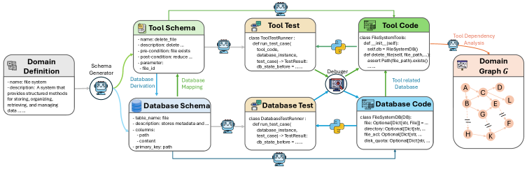
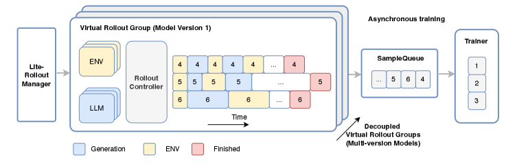
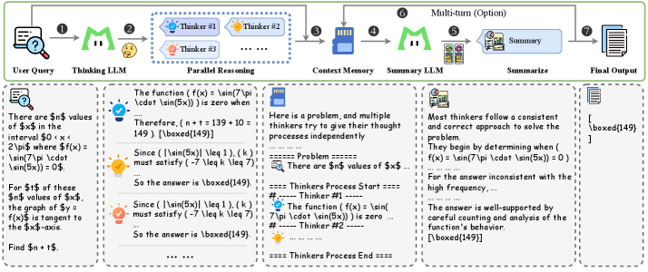

30 秒看懂
LongCat-Flash-Thinking-2601 是美团开源的 5600 亿（560B）总参数、平均激活约 27B 的 MoE 推理模型。它延续了 LongCat-Flash 的架构与预训练配方，但把重心放在一件事上：当模型「闭门苦思」的能力接近天花板时，下一个突破口是「与外部环境交互」——也就是 agentic（智能体）推理。
它的招式是把 agentic 能力当成可扩展的训练对象来设计：① 自动造环境——用「领域图」自动合成可执行、可验证的工具环境，覆盖 20+ 领域、最多 3.2 万个并发环境；② DORA 异步 RL——全流式异步框架，稳定支撑万卡 + 多环境训练；③ 抗噪训练——主动往环境里注入真实世界的噪声，按课程逐步加难，让模型在「不完美环境」里依然稳；④ Heavy Thinking——测试时同时拓展推理的「宽度」与「深度」。
成果：在开源模型里，agentic 搜索与工具调用全面 SOTA——BrowseComp 73.1、BrowseComp-ZH 77.7、τ²-Bench 88.2；配合 Heavy 模式，AIME-2025 拿到满分、IMO-AnswerBench 达 86.8，逼近顶级闭源模型。
（agentic 搜索）
（agentic 工具调用）
（Heavy 模式满分）
这篇报告要解决什么
当「内在推理」逼近极限，下一步靠什么？
过去两年，推理模型在数学、编程这类「闭卷题」上突飞猛进，部分任务甚至超过顶尖人类专家。于是一个自然的问题浮现：这种复杂问题求解能力，怎么用到真实生活里更复杂的任务上？又怎么继续往上突破？
作者给出的判断是：当模型内在的推理能力接近极限，与外部环境的交互就成了继续提升的关键机制——让模型主动调用工具、搜索信息、在多轮对话中推进，把「思考」延伸到「行动」。这正是 agentic 推理的核心。但要把它训出来，有三道现实难关：
- 长程交互：agentic 任务是「思考→调工具→看结果→再思考」的长链条，对长上下文建模和 RL 基础设施都提出更高要求。
- 数据稀缺：真实世界里大规模、高质量、含推理与规划的 agentic 轨迹极其稀少，没法像普通语料一样直接抓取。
- 环境带噪：现实环境天然「不完美」——工具会报错、返回会缺失、用户会含糊。在干净环境里训出来的 agent，一进真实场景就掉链子。
已有思路 · 卡在哪
为什么现成的训练范式不够用
在进入本文方法前，先看清现有 agentic 训练范式各自的局限——这正是 LongCat-Flash-Thinking-2601 想补的三块短板。点开每张卡片看它做了什么、卡在哪。
怎么做：用「答案是否正确 / 单测是否通过」作为可验证奖励（RLVR），对长链思考做强化学习。这条路在 AIME、LiveCodeBench 这类题上效果显著，也是本文「通用思考（General Thinking）」初始策略的基础。
卡在哪：它本质是单轮、静态的——模型不与外部世界交互，能力上限受限于「内在推理」。一旦任务需要查资料、调工具、跟用户多轮拉扯，这套范式就覆盖不到。
怎么做：针对 agentic search、agentic coding 等具体场景，分别构造环境与任务做 RL。本文也保留了这些专用能力作为初始策略。
卡在哪：作者明确指出——真正高级的 agentic 能力，核心特征是「泛化」：在已知环境学到的行为，要能可靠迁移到没见过的环境。只在少数垂直场景训练，学到的是「领域专属套路」，换个工具集就失效。要泛化，就得让模型见过足够多样的工具与交互——这就引出了「环境规模化」。
怎么做：当前主流 agentic 训练通常用精心整理的指令、稳定可控的环境来交互，假设环境是「理想」的。
卡在哪：真实世界恰恰相反——工具调用会失败、返回字段会缺、参数会被误解、用户表述会含糊。论文发现：在干净环境训练的 agent 部署到这些「不完美」环境时，性能显著下降。本文的对策是反其道而行——主动把噪声注入训练（见「抗噪训练」一节）。
本文做法 · 总览
一条端到端流水线：从预训练到 agentic 后训练
LongCat-Flash-Thinking-2601 的强大不来自单点技巧，而是数据、环境、算法、基础设施的协同设计。整体可以看成下面五步——后面几节会逐个展开「重头戏」部分。
点「下一步」按训练顺序走一遍：预训练 → agentic 中训练 → 环境规模化 → 多环境异步 RL（含抗噪）→ Heavy Thinking RL。
本文做法 · 核心贡献 ①
自动造环境：用「领域图」批量生成可执行、可验证的世界
要让 agent 学会泛化，就得让它在大量多样的环境里练手。但人工搭环境又慢又贵。作者的解法是一条自动化环境构建流水线：从一句高层「领域说明」出发，自动合成工具、数据库、测试与代码，并把工具之间的依赖整理成一张领域图 G，之后就能在图上采样出复杂度可控的任务。

- Domain Definition（最左，起点）：一份高层领域说明，例如「文件系统」——给出一组方法名、描述、用途。这是整条流水线唯一的人工输入。
- Schema Generator（蓝色箭头）：由领域定义「派生（Schema Derivation）」出两类 schema——Tool Schema（工具的名称/描述/前后置条件/参数）与 Database Schema（表名/列/主键），二者之间还有「Database Mapping」对齐工具与数据。
- 测试先行（中列 Tool Test / Database Test）：先为每个工具与数据库写出测试用例类（run_test_case、校验 db_state_before/after），把「正确行为」用可执行断言固定下来。
- 代码实现 + 调试（右列 Tool Code / Database Code + Debuger🐍）：再生成真正可运行的 Python 实现（FileSystemTools、FileSystemDB），用 Python 解释器反复调试，直到通过前面写好的测试——这保证环境真的能执行，而不只是看起来对。
- Tool Dependency Analysis → Domain Graph G（最右）：对通过验证的工具做依赖分析，节点是工具、边是「参数依赖」，汇成一张领域图 G。后续任务就从这张图上采样工具链生成。
有了领域图 G，构建任务就变成在图上「采样工具链」：先采一条中等规模的工具链，逐步降低已选工具的再次被选概率以保证多样性，再为链上每个工具实例化数据库状态，确保依赖被满足。要加难，就把初始工具链扩展成更大的子图——这会自然产生多条合法执行路径，逼模型学会规划与选择。
环境越长越复杂，越难保证「跨工具的数据库一致性」。作者的「保可验证性的环境扩展（原文 Figure 4）」从一条可执行的种子工具链出发，做受控的图增长，每一步都靠「执行代码 + 校验数据库最终状态」来验证轨迹正确——这样合成出来的数据始终扎根于真实执行逻辑，而不是凭空编造的对话。
合成数据从哪来？三条互补来源文本挖掘 + 环境执行 + 规划增强
- 文本驱动合成（Text-driven）：大规模语料里藏着大量隐式的「多步流程」（教程、操作指南）。先识别富含多步工作流的文本段、抽取潜在函数与调用列表（Tool Extraction），再翻译成具体的多轮「用户-智能体」交互，并做多样性增强与质量过滤。
- 环境扎根合成（Environment-grounded）：直接在可执行环境里跑——基于工具定义实现轻量 Python 环境、用有向图建模工具间依赖、采样工具链并执行验证最终状态，保证逻辑正确、执行一致。
- 规划导向增强（Planning-Oriented）：用 Tool Decomposition（把参数藏进环境，逼模型主动「问/取」）与 Reasoning Decomposition（为每步动作造多个候选，再合成「选最优」的推理）把普通轨迹改写成决策过程，显式强化规划能力。
本文做法 · 核心贡献 ①（基础设施）
DORA：撑起「万卡 × 多环境」的全流式异步 RL
有了海量环境，还得有能稳定吃下它们的训练系统。相比数学题那种「单轮、可一次算完」的场景，agentic 训练是多轮的——反复在「LLM 生成 → 环境执行 → 奖励评估」之间穿梭，轨迹既长尾偏斜又时长不可预测。同步训练会让大量设备空等。作者把它们的异步 RL 框架 DORA 系统性扩展到了多环境场景。

- Lite-Rollout Manager（最左）：轻量化的全局调度器，只管控制流（哪些样本该跑、跑到哪了）。原本臃肿的 RolloutManager 被拆薄，避免在扩展到几百台机器、上万环境时变成单机瓶颈。
- Virtual Rollout Group（中间，可叠多份）：每个组持有一份模型版本（Model Version 1/2/…），内含 ENV（环境）、LLM（生成） 与 Rollout Controller。组与组之间「解耦」，可同时存在多版本模型——这就是「Decoupled Virtual Rollout Groups（多版本模型）」。
- 流式时间线（中部彩色方块）：横轴是时间，蓝=Generation（生成）、黄=ENV（环境执行）、红=Finished（完成）。可以看到不同样本（4/5/6 行）的生成与环境步交错推进、各自到点就完成——没有「批次栅栏」逼大家对齐，设备不再空等。
- SampleQueue（右二）：完成的样本流入一个队列做缓冲，把「产出样本」与「消费样本训练」彻底解耦。
- Trainer（最右）：持续从队列取样本更新参数（1/2/3…），与 rollout 完全异步，因此能容忍长尾轨迹而不拖慢整体——这就是「Asynchronous training」。
规模有多大？作者的算法设置需要多达 3.2 万个环境、跑在约 400 台物理机、数千张加速器上。为此他们进一步把 RolloutManager 拆分以消除单机瓶颈，并用 PD 分离 + CPU 换出（Prefill-Decode Disaggregation with KV-cache Swapping） 解决多轮长上下文带来的专家并行负载不均——最终在 560B 模型上实现了工业级的稳定与高利用率。
本文做法 · 核心贡献 ②
抗噪训练：主动把「真实世界的不完美」塞进训练
这是本文最有「现实感」的一招。既然真实环境必然带噪，作者就系统性地分析真实噪声的来源，再设计一条自动化流水线，把多类型、多强度的噪声注入训练环境，并用课程学习逐步加难。
常见做法：假设环境完美
用精心整理的指令 + 稳定环境训练。结果：模型在「没见过 / 不完美」的环境里性能显著退化，鲁棒性差。
本文做法：注入噪声 + 课程加难
把鲁棒性量化为「同一任务在完美 vs 不完美环境上的性能差」。从轻微扰动起步，待模型在当前难度足够稳，再逐步加大噪声的难度与多样性——让训练始终「有信息量」而不被噪声淹没。
效果（原文 Table 1 的消融）：带噪训练在标准 agentic 基准上性能相当甚至略好，同时在带噪 / 不完美条件下大幅提升——也就是说，抗噪是「几乎不付出代价」换来的稳健。作者还据此构造了 τ²-Noise、Vita-Noise 与 Random Complex Tasks 等评测，并承诺开源噪声注入流水线。
本文做法 · 核心贡献 ③
Heavy Thinking：测试时同时拓「宽度」与「深度」
测试时扩展（TTS）有两条正交的路：深度——更长的思维链 + 自我反思，逐步精化推理；宽度——像 self-consistency / MCTS 那样并行探索多条轨迹。Heavy Thinking 把两者合二为一：先并行思考拓宽探索面，再汇总反思加深结论。

- ① User Query → ② Thinking LLM：一道有挑战性的题进入系统，交给「思考模型」。
- ③ Parallel Reasoning（并行推理，拓「宽度」）：同一个思考模型并行跑出多条独立轨迹（Thinker #1 / #2 / #3 …），每个 Thinker 给出自己的解法与候选答案——图中三个灯泡分别独立推导，扩大探索面。
- ④ Context Memory（上下文记忆）：把多条轨迹的中间推理与结论汇聚写入共享上下文（图中「多个 thinker 独立给出思考过程」的汇编），供下一阶段读取。
- ⑤ Summary LLM → ⑥ Summarize（汇总反思，加「深度」）：由「汇总模型」对所有候选做反思式推理：识别多数 thinker 的共识、剔除低频的不一致答案，再通过对函数行为的仔细计数与分析得出有据可依的最终结论。
- ⑦ Final Output / Multi-turn（可选多轮）：输出最终答案（图例中 \boxed{149}）；在工具使用与多轮对话场景下，可循环回到并行推理继续下一轮（顶部的「Multi-turn (Option)」回环）。
跟着走一遍 Heavy Thinking 的五个阶段
点「下一步」逐阶段查看数据如何从「一道题」流到「最终答案」。
作者还为汇总阶段单独加了一段 RL，专门强化「聚合 + 精化中间结论」的能力。实验上，Heavy Thinking 在长思维链、工具集成推理、纯 agentic 工具使用等多种设定下都有效，并持续优于 self-consistency——而且随着测试时算力预算增大，优势越发明显。
看一眼图中的真实演示题多个 Thinker 各自求解，再由 Summary 综合出 \boxed{149}
原文 Figure 10 用一道求参数 \(n\) 的数学题做演示：让 \(f(x)=\sin(7\pi\cdot\sin(5x))\) 在某区间内为零的 \(x\) 值个数相关问题。
# 并行推理阶段：多个 Thinker 独立作答 Thinker #1 → 推导后得到 n + t = 139 + 10 = 149，答案 \boxed{149} Thinker #2 → 由 |sin(5x)| ≤ 1、(k) 满足 -7 ≤ k ≤ 7，得 \boxed{149} Thinker #3 → 同样约束下独立推导，得 \boxed{149} # 汇总阶段：Summary 模型反思 + 综合 观察：多数 thinker 路径一致且自洽；剔除低频的不一致答案 结论：经对 f(x) 行为的计数与分析，最终 \boxed{149}
注：示例文本转写自论文配图，用于说明「并行 → 汇总」的数据流，非完整解题过程。
有意思的一点 · One More Thing
Zig-Zag 注意力：为「更长上下文 + Heavy 模式」省算力
推理痕迹越来越长，标准全注意力的二次复杂度很快变得昂贵；而 Heavy 模式还要同时解码多条并行轨迹，进一步放大时延。论文在结尾抛出一个「One More Thing」——Zig-Zag 注意力，给出 LongCat-Flash-Thinking-ZigZag 变体。
- 混合两种注意力：把 MLA（多头潜在注意力，全局） 与 SSA（流式稀疏注意力） 结合——SSA 对每个 query 只看「最近的局部窗口 + 序列开头的少量初始 token」，让计算随上下文长度次二次增长。
- 逐层交错稀疏：约 50% 的全注意力层替换为 SSA 层，其余保留 MLA 全注意力。按「层」而非「头」做稀疏，避免线程发散、利于硬件利用。
- 中训练引入 + 重要性筛选：用校准数据估计各注意力层的相对重要性，把最不重要的一批层换成 SSA，再继续长上下文中训练。
- 配合 YaRN 外推到 1M：结合 YaRN 位置编码扩展，可处理多达 100 万 token 的上下文。关键参数：block size 128、sink block 1 个、local block 7 个（合计 1,024 token）。
LongCat-Flash-Thinking-ZigZag 在性能与速度之间取得良好折中——在维持竞争力的同时显著提升长上下文效率（原文 Figure 13 给出「性能 vs 相对成本」的对比）。
实验结论
开源 agentic 推理的新高度
作者把模型与一众先进模型对比——开源侧 DeepSeek-V3.2-Thinking、Kimi-K2-Thinking、Qwen3-235B-A22B-Thinking-2507、GLM-4.7-Thinking；闭源侧 Claude-Opus-4.5-Thinking、Gemini-3-Pro、GPT-5.2-Thinking-xhigh。结论是：在保持通用推理竞争力的同时，agentic 搜索与工具调用全面拿下开源 SOTA。
（中文 agentic 搜索）
（Heavy，数学 SOTA）
（Heavy 模式）
（真实工具场景）
- 数学推理：tool-integrated 推理稳居第一梯队；配 Heavy 模式，AIME-2025 满分、IMO-AnswerBench 达 86.8、AMO-Bench 开源 SOTA，逼近顶级闭源。
- agentic 搜索：BrowseComp 73.1、BrowseComp-ZH 77.7 均超过所有对比模型；RWSearch 79.5，仅次于 GPT-5.2-Thinking。
- agentic 工具调用：τ²-Bench、VitaBench 及其带噪变体上均表现强劲，并在「任意生成工具」的 Random Complex Tasks 上取得 SOTA——印证了泛化与抗噪。
- 通用 QA / 代码：HLE（纯文本子集）25.2、GPQA-Diamond（Heavy）85.2；代码上与 GLM-4.7 相当但更省——每题约 45k token vs 57k。
LongCat-Flash-Thinking-2601 证明了：把「环境、数据、算法、基础设施」端到端协同设计——自动造环境 + DORA 异步多环境 RL + 抗噪训练 + Heavy Thinking——可以把 agentic 推理做成一件「可规模化训练」的事，并已开源权重供社区研究。